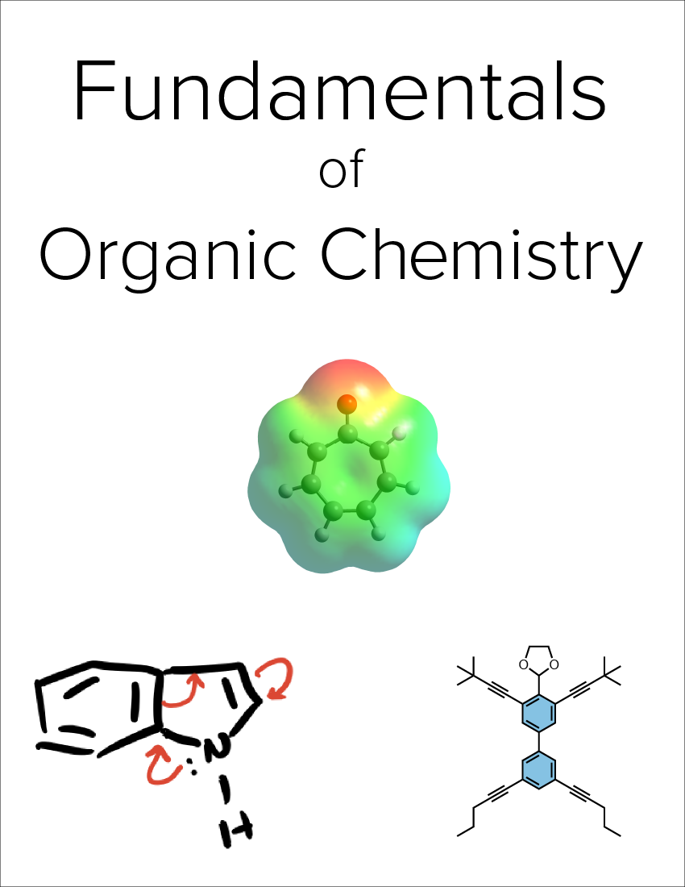

Fundamentals of Organic Chemistry
Welcome
 This is the website for the book “Fundamentals of Organic Chemistry.”
The book is written in R Markdown, using RStudio as my text editor and the bookdown package to turn a collection of markdown documents into a coherent whole. The book’s source code is hosted on GitHub, at https://github.com/kbroaders/OrganicBook. If you notice typos or other issues, feel free to open an issue on GitHub or submit a pull request. If you do the latter, in your commit message, please add the sentence “I assign the copyright of this contribution to Kyle Broaders,” so that I can maintain the option of publishing this book in other forms.
This project was built using Claus O. Wilke’s excellent Fundamentals of Data Visualization as a starting point. This work is licensed under the Attribution-NonCommercial-ShareAlike 4.0 International License.